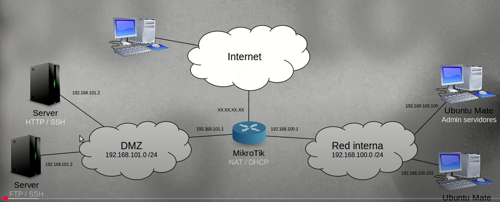
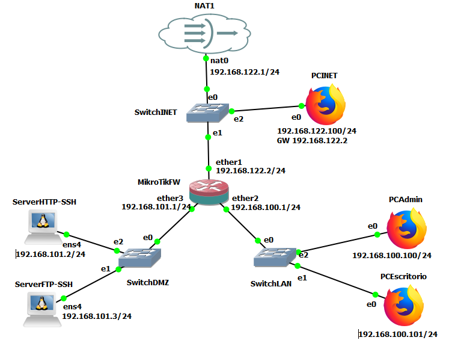

Práctica 7.3: MikroTik - DMZ con un solo router
Datos de la Práctica
- Módulo: Seguridad y Alta Disponibilidad (SAD - 0378)
- Unidad Didáctica: UD7 - Seguridad perimetral: cortafuegos y DMZ
- Entorno de trabajo: Emulador de red GNS3 con las siguientes máquinas y appliances:
- Router MikroTik RouterOS (Cloud Hosted Router - CHR) configurado como cortafuegos perimetral con tres interfaces de red (Three-Legged Firewall). Toda su parametrización se realizará a través de su entorno gráfico WebFig.
- Servidores Linux Debian en la zona DMZ:
ServerHTTP-SSH(IP192.168.101.2/24): Servidor Web Apache2 (HTTP puerto 80) y administración remota SSH (puerto 22).ServerFTP-SSH(IP192.168.101.3/24): Servidor FTP vsftpd (puerto 21) y administración remota SSH (puerto 22).
- Estaciones de prueba y administración en LAN: Dos appliances Webterm gráficos:
PCAdmin(PCAdmincon IP fija192.168.100.100/24): Estación autorizada del administrador de red para gestionar el router mediante WebFig y los servidores vía SSH.PCEscritorio(PCEscritoriocon IP fija192.168.100.101/24): Estación de trabajo estándar de usuario interno.
- Cliente / Auditor externo en la WAN: Nodo Webterm (
PCINETcon IP192.168.122.100/24) o el propio navegador web de la máquina anfitriona conectada a la nube NAT (virbr0).
1. Objetivos
- Diseñar e implementar en GNS3 una arquitectura de Zona Desmilitarizada (DMZ) completa y segura basada en un único cortafuegos de tres interfaces (Three-Legged Firewall).
- Realizar toda la configuración del router perimetral exclusivamente a través de su entorno gráfico web (WebFig), prescindiendo por completo de la consola de comandos CLI.
- Configurar directivas de Destination NAT (DNAT / Port Forwarding) para publicar hacia Internet los servicios públicos alojados en servidores independientes de la DMZ:
- Redirección del tráfico web (TCP 80) hacia el servidor
ServerHTTP-SSH(192.168.101.2). - Redirección del tráfico de ficheros (TCP 21) hacia el servidor
ServerFTP-SSH(192.168.101.3).
- Redirección del tráfico web (TCP 80) hacia el servidor
- Diseñar la política de filtrado en la cadena
forwardpara garantizar el aislamiento estricto: permitir que los clientes externos e internos accedan a los servicios públicos de la DMZ pero bloquear cualquier intento de acceso iniciado desde la DMZ hacia la red LAN interna (Regla de oro de la DMZ). - Establecer un control de acceso granular en la LAN: permitir que la estación de administración (
PCAdmin) acceda por SSH (puerto 22) a los servidores de la DMZ, denegando dicho acceso a los usuarios convencionales (PCEscritorio). - Securizar la cadena
inputdel router MikroTik, restringiendo el acceso administrativo a WebFig únicamente a la red corporativa o a la IP del administrador. - Aplicar el principio de inspección con estado (Stateful Packet Inspection - SPI) para optimizar el rendimiento y autorizar el tráfico de retorno de conexiones legítimas.
- Auditar el funcionamiento perimetral mediante una batería exhaustiva de pruebas técnicas desde las distintas zonas de red.
2. Escenario y Fundamentos Técnicos
Arquitectura de la DMZ con un Router
Cuando una organización requiere que sus servicios públicos sean accesibles desde Internet garantizando al mismo tiempo que una intrusión en dichos servidores no comprometa los datos ni los equipos internos, despliega una arquitectura DMZ con cortafuegos de tres patas:

Topología en GNS3
El laboratorio se implementa en GNS3 con dos servidores Debian independientes en la DMZ, estaciones Webterm para la administración y pruebas en la LAN, y un cliente Webterm externo en la WAN:

3. Vídeo Formativo y Avisos Cruciales de Configuración
Si prefieres seguir la práctica en vídeo aquí tienes una descriipción completa de la misma
Vídeo de Referencia del Procedimiento
Sigue las instrucciones del vídeo MikroTik - DMZ con un solo router (Román Carceller) para comprender los fundamentos de la redirección de puertos y el aislamiento entre interfaces.
Avisos y Correcciones Docentes Imprescindibles
Al replicar la configuración del vídeo en tu laboratorio, ten muy presentes las siguientes indicaciones:
- Dos servidores independientes en DMZ: A diferencia de una configuración simplificada con un único host, aquí disponemos de dos servidores Debian:
ServerHTTP-SSH(192.168.101.2): aloja el servicio Web Apache en el puerto 80.ServerFTP-SSH(192.168.101.3): aloja el servicio FTP en el puerto 21.
- Reglas omitidas en el vídeo (minuto 18:00): A la configuración mostrada en el vídeo le faltan directivas indispensables:
- Aceptar en la cadena
forwardel tráfico HTTP (puerto 80) y FTP (puerto 21) dirigido a las IPs de la DMZ que llegue porether1. Si no se autorizan enFilter Rules, los paquetes redirigidos por DNAT serán descartados por la directiva denegatoria. - Política por defecto restrictiva (reject / drop) para todo el tráfico
inputyforwardno autorizado que provenga deether1.
- Aceptar en la cadena
- Uso exclusivo de WebFig: En routers con tres o más interfaces activas, no utilices el asistente Quickset; realiza toda la configuración directamente en WebFig.
- Tabla de referencia de reglas en WebFig: La siguiente captura ilustra el conjunto ordenado de reglas con sus respectivos comentarios aclaratorios:

4. Tabla de Direccionamiento IP del Laboratorio
| Nodo / Dispositivo | Tipo de Nodo | Interfaz | Dirección IP / Máscara | Puerta de Enlace | Rol y Función en el Escenario |
|---|---|---|---|---|---|
| MikroTik RouterOS | Router CHR | ether1 (WAN) |
192.168.122.2/24 (o DHCP) |
192.168.122.1 |
Conexión perimetral externa hacia Internet (virbr0). |
| MikroTik RouterOS | Router CHR | ether2 (LAN) |
192.168.100.1/24 |
-- | Puerta de enlace predeterminada de la red LAN. |
| MikroTik RouterOS | Router CHR | ether3 (DMZ) |
192.168.101.1/24 |
-- | Puerta de enlace predeterminada de la zona DMZ. |
| ServerHTTP-SSH | Servidor Debian | eth0 / ens4 |
192.168.101.2/24 |
192.168.101.1 |
Servidor Web Apache (HTTP :80) y administración SSH (:22). |
| ServerFTP-SSH | Servidor Debian | eth0 / ens4 |
192.168.101.3/24 |
192.168.101.1 |
Servidor FTP vsftpd (FTP :21) y administración SSH (:22). |
PCAdmin (PCAdmin) |
Appliance Webterm | eth0 |
192.168.100.100/24 |
192.168.100.1 |
Puesto del administrador de red (WebFig y gestión SSH). |
PCEscritorio (PCEscritorio) |
Appliance Webterm | eth0 |
192.168.100.101/24 |
192.168.100.1 |
Puesto cliente de usuario de la red corporativa. |
Webterm-Externo (PCINET) |
Appliance Webterm | eth0 |
192.168.122.100/24 |
192.168.122.2 |
Simulación de auditor / usuario externo en Internet. |
5. Desarrollo Paso a Paso de la Práctica
Fase 1: Despliegue de la Topología y Conectividad Base mediante WebFig
- Archivo de escenario descargable: Puedes acelerar el montaje descargando el proyecto preconfigurado con clientes y servidores en Escenario DMZ con 1 router (SharePoint).
Si no puedes descargarlo o prefieres desarrollar el escenario puedes seguir estos pasos
-
Monta la topología conectando:
ether1de MikroTik al switch WAN (SwitchINET), conectado a la Nube NAT (virbr0) y aPCINET.ether2al switch LAN (SwitchLAN), donde se conectanPCAdmin(PCAdmin) yPCEscritorio(PCEscritorio).ether3al switch DMZ (SwitchDMZ), donde se conectanServerHTTP-SSHyServerFTP-SSH.
-
Configuración de Red en los Equipos Finales:
Edita
(Nota: Si la tarjeta de red en Debian figura como/etc/network/interfacesenServerHTTP-SSH:ens4, sustituyeeth0porens4).
Aplica los cambios consystemctl restart networkingy comprueba el servicio web:Edita
Aplica los cambios con/etc/network/interfacesenServerFTP-SSH:systemctl restart networkingy comprueba el servicio FTP:Edita
/etc/network/interfacesenPCAdmin:Aplica conauto eth0 iface eth0 inet static address 192.168.100.100 netmask 255.255.255.0 gateway 192.168.100.1/etc/init.d/networking restart. -
Configuración de Interfaces y NAT en MikroTik mediante WebFig: Abre el navegador de la máquina anfitriona hacia la IP de
ether1:-
Paso 1: Asignación de Direcciones IP: Ve a IP → Addresses y pulsa Add New para cada interfaz:
- LAN (
ether2):Address:192.168.100.1/24Interface:ether2Comment:Puerta de enlace LAN- Pulsa OK.
- DMZ (
ether3):Address:192.168.101.1/24Interface:ether3Comment:Puerta de enlace DMZ- Pulsa OK.
- WAN (
ether1):- Configura la IP estática:
Address:192.168.122.2/24,Interface:ether1,Comment:Enlace WAN. - Solo después de haberla configurado y accedido a la configuración del router en el navegador del host a través de la IP
192.168.122.2borra la IP que estaba concedida por DHCP.
- Configura la IP estática:
- LAN (
-
Paso 2: Enmascaramiento para salida a Internet (Source NAT): Ve a IP → Firewall → NAT y pulsa Add New:
- Chain:
srcnat - Out. Interface:
ether1 - Action:
masquerade - Comment: NAT Masquerade hacia Internet
- Pulsa OK.
- Chain:
-
-
Comprobación de Conectividad Inicial: Antes de configurar el cortafuegos, comprueba que el enrutamiento base funciona realizando pruebas de ping desde las terminales de
PCINET,PCAdmin,PCEscritorio,ServerHTTP-SSHyServerFTP-SSHhacia sus respectivas puertas de enlace predeterminadas y hacia alguna dirección de internet (www.cisco.com, www.uji.es, etc)
Fase 2: Publicación de los Servicios de la DMZ con DNAT (Port Forwarding)
En esta fase vamos a hacer que al acceder a la IP WAN del router MikroTik, puertos 80 ó 21, los paquetes se hagan llegar a los servidores ServerHTTP-SSH y ServerFTP-SSH respectivamente. Pero antes de realizar los pasos indicados a continuación hemos de modificar en IP - Services la forma en que gestionaremos el router MikroTik, que actualmente es en su puerto 80. En una práctica anterior ya vimos cómo hacerlo. Haz que la gestión del MikroTik se realice por el 8080 y comprueba que lo puedes gestionar por ese puerto antes de dar los pasos siguientes.
Para que los usuarios de Internet accedan a los servidores web y FTP empleando la IP pública de ether1, configuramos en WebFig las reglas de Destination NAT.
-
En WebFig, accede a IP → Firewall → NAT y pulsa Add New:
-
Regla DNAT Web HTTP hacia
ServerHTTP-SSH(Puerto 80):- Chain:
dstnat - In. Interface:
ether1 - Protocol:
tcp - Dst. Port:
80 - Action:
dst-nat - To Addresses:
192.168.101.2 - To Ports:
80 - Comment: DNAT Web HTTP hacia ServerHTTP-SSH
- Pulsa OK.
- Chain:
-
Regla DNAT FTP hacia
ServerFTP-SSH(Puerto 21):- Pulsa nuevamente Add New:
- Chain:
dstnat - In. Interface:
ether1 - Protocol:
tcp - Dst. Port:
21 - Action:
dst-nat - To Addresses:
192.168.101.3 - To Ports:
21 - Comment: DNAT FTP hacia ServerFTP-SSH
- Pulsa OK.
-
Comprueba que desde el host accedes al servidor ServerHTTP-SSH al acceder con un navegador a http://192.168.122.2 y a ServerFTP-SSH si accedes desde un terminal a ftp debian@192.168.122.2
Fase 3: Configuración del Cortafuegos en Filter Rules (WebFig)
Accede en WebFig a IP → Firewall → Filter Rules y añade pulsando Add New la tabla completa de reglas de seguridad, respetando rigurosamente su orden relativo:
-
Regla 0 (SPI Global - Conexiones Establecidas y Relacionadas):
- Chain:
forward - Connection State: marca
establishedyrelated - Action:
accept - Comment: Permitir establecidas y relacionadas
- Pulsa OK.
- Chain:
-
Regla 1 (Publicación de Servicios DMZ desde Internet):
- Chain:
forward - In. Interface:
ether1 - Out. Interface:
ether3 - Protocol:
tcp - Dst. Port:
80,21 - Action:
accept - Comment: Permitir el tráfico de paso desde Internet a los servidores WEB y FTP de la DMZ
- Pulsa OK.
- Chain:
-
Regla 2 (Bloqueo de Tráfico de Paso no Autorizado desde Internet):
- Chain:
forward - In. Interface:
ether1 - Action:
reject(odrop) - Comment: Rechazo todo el tráfico de paso que venga de Internet
- Pulsa OK.
- Chain:
-
Regla 3 (Protección de la Entrada al Router desde Internet):
- Chain:
input - In. Interface:
ether1 - (Opcional) En Src. Address marca la casilla
!(not) e introduce la IP autorizada de administración remota: 192.168.122.1 - Action:
reject(odrop) - Comment: Rechazo todo el tráfico de entrada que venga de internet que no sea de mi equipo
- Pulsa OK.
- Chain:
-
Regla 4 (Aislamiento de la LAN frente a la DMZ - ¡Regla de Oro de la DMZ!):
- Chain:
forward - In. Interface:
ether3 - Out. Interface:
ether2 - Action:
reject(odrop) - Comment: Rechazo el tráfico de paso de DMZ a red interna
- Pulsa OK.
- Chain:
-
Regla 5 (Acceso LAN al Servidor Web DMZ):
- Chain:
forward - In. Interface:
ether2 - Dst. Address:
192.168.101.2 - Protocol:
tcp - Dst. Port:
80 - Action:
accept - Comment: Permito el tráfico WEB desde la red interna al servidor WEB de la DMZ
- Pulsa OK.
- Chain:
-
Regla 6 (Acceso LAN al Servidor FTP DMZ):
- Chain:
forward - In. Interface:
ether2 - Dst. Address:
192.168.101.3 - Protocol:
tcp - Dst. Port:
21 - Action:
accept - Comment: Permito el tráfico FTP desde la red interna al servidor FTP de la DMZ
- Pulsa OK.
- Chain:
-
Regla 7 (Gestión SSH Exclusiva para el Administrador):
- Chain:
forward - In. Interface:
ether2 - Src. Address:
192.168.100.100(IP dePCAdmin) - Protocol:
6 (tcp) - Dst. Port:
22 - Action:
accept - Comment: Permitir el tráfico de paso SSH desde el equipo del administrador a cualquier equipo de la DMZ
- Pulsa OK.
- Chain:
-
Regla 8 (Bloqueo de Tráfico Restante de LAN hacia DMZ):
- Chain:
forward - In. Interface:
ether2 - Out. Interface:
ether3 - Action:
reject(odrop) - Comment: Rechazo el tráfico de paso de red interna a DMZ
- Pulsa OK.
- Chain:
Verificación Visual: Comprueba que en WebFig tu lista de directivas coincide con la captura de referencia mostrada en la Sección 3, verificando que los comentarios coinciden y los contadores de paquetes (Packets / Bytes) comienzan a registrar actividad a medida que ejecutes las pruebas.
6. Batería de Pruebas y Auditoría de Seguridad
Warning
En la appliance Webterm no está instalado ftp. Deberás hacer un apt update y apt install ftp para poder hacer las pruebas.
Ejecuta la siguiente batería de comprobaciones técnicas desde las diferentes estaciones de la maqueta y completa la matriz de resultados:
| Prueba nº | Origen → Destino | Protocolo / Puerto | Comando / Acción ejecutada | Resultado esperado | ¿Superada? (Sí/No) | Regla aplicada en WebFig |
|---|---|---|---|---|---|---|
| T1 | LAN → Internet | ICMP | ping -c 3 8.8.8.8 desde PCEscritorio |
Salida exitosa a Internet vía NAT | NAT Masquerade | |
| T2 | LAN → DMZ (Web) | HTTP (TCP 80) | Navegar a http://192.168.101.2 desde PCEscritorio |
Muestra la página web de ServerHTTP-SSH |
Regla 5 | |
| T3 | LAN → DMZ (FTP) | FTP (TCP 21) | ftp 192.168.101.3 desde PCEscritorio |
Conexión establecida con ServerFTP-SSH |
Regla 6 | |
| T4 | LAN (Admin) → DMZ | SSH (TCP 22) | ssh debian@192.168.101.2 desde PCAdmin |
Conexión SSH autorizada | Regla 7 | |
| T5 | LAN (Admin) → DMZ | SSH (TCP 22) | ssh debian@192.168.101.3 desde PCAdmin |
Conexión SSH autorizada | Regla 7 | |
| T6 | LAN (Cliente) → DMZ | SSH (TCP 22) | ssh debian@192.168.101.2 desde PCEscritorio |
¡RECHAZADO / BLOQUEADO! | Regla 8 | |
| T7 | WAN / Host → DMZ | HTTP (TCP 80) | Navegar a http://192.168.122.2 desde PCINET |
Web de ServerHTTP-SSH visible vía DNAT |
Regla 1 (DNAT) | |
| T8 | WAN / Host → DMZ | FTP (TCP 21) | Conexión a 192.168.122.2:21 desde PCINET |
Servicio FTP de ServerFTP-SSH visible vía DNAT |
Regla 1 (DNAT) | |
| T9 | WAN / Host → DMZ | SSH (TCP 22) | ssh debian@192.168.122.2 desde PCINET |
¡BLOQUEADO! (No publicado hacia WAN) | Regla 2 | |
| T10 | WAN / Host → LAN | ICMP (Ping) | ping -c 3 192.168.100.100 desde red WAN |
¡BLOQUEADO! (Sin respuesta) | Regla 2 | |
| T11 | DMZ → LAN | ICMP (Ping) | ping -c 3 192.168.100.100 desde ServerHTTP-SSH |
¡BLOQUEADO! (0% éxito, Regla de Oro) | Regla 4 | |
| T12 | DMZ → LAN | ICMP (Ping) | ping -c 3 192.168.100.100 desde ServerFTP-SSH |
¡BLOQUEADO! (0% éxito, Regla de Oro) | Regla 4 | |
| T13 | DMZ → LAN | SSH | Intentar ssh http://192.168.100.100 desde DMZ |
¡BLOQUEADO! (Aislamiento total) | Regla 4 | |
| T14 | LAN (Admin) → Router | HTTP (WebFig) | Abrir http://192.168.100.1:8080 desde PCAdmin |
Acceso concedido a WebFig | Conexión local LAN | |
| T15 | WAN / DMZ → Router | HTTP (WebFig) | Abrir navegador hacia 192.168.122.2:8080 desde PCINET |
¡BLOQUEADO! | Regla 3 |
7. Cuestiones y Análisis Técnico
Responde con precisión técnica a las siguientes cuestiones en tu memoria de prácticas:
- Aislamiento Perimetral y Contención de Intrusiones (Pivoting):
- Supón que un atacante remoto detecta una vulnerabilidad en la aplicación web alojada en
ServerHTTP-SSH(192.168.101.2) y logra ejecutar comandos con una reverse shell. Explica detalladamente cómo las reglas de RouterOS le impiden:- Pivotar e iniciar ataques contra los equipos y datos de la red corporativa (
192.168.100.0/24). - Descargar ficheros confidenciales atacando internamente a
ServerFTP-SSH(192.168.101.3).
- Pivotar e iniciar ataques contra los equipos y datos de la red corporativa (
- Supón que un atacante remoto detecta una vulnerabilidad en la aplicación web alojada en
- Inspección de Estados (SPI / Connection Tracking):
- La Regla 4 rechaza de forma tajante cualquier paquete originado en la DMZ (
ether3) hacia la red interna (ether2). Siendo así, ¿por qué cuando un usuario de la LAN solicita una página ahttp://192.168.101.2el servidor web sí puede devolver los paquetes de respuesta? ¿Qué regla lo permite y por qué se evalúa antes que la Regla 4?
- La Regla 4 rechaza de forma tajante cualquier paquete originado en la DMZ (
- Control Granular del Tráfico de Gestión SSH:
- Analiza la configuración de la Regla 7 frente a la Regla 8. ¿Por qué es fundamental que la Regla 7 filtre por la dirección IP de origen (
Src. Address: 192.168.100.100) además de la interfaz y el puerto TCP 22? ¿Qué ocurriría si esta regla no especificara la dirección de origen?
- Analiza la configuración de la Regla 7 frente a la Regla 8. ¿Por qué es fundamental que la Regla 7 filtre por la dirección IP de origen (
- Directivas
rejectfrente adropy Evaluación de Riesgos:- ¿Qué diferencias técnicas y de seguridad existen entre aplicar una acción
reject(como en el ejemplo del laboratorio) frente a una accióndropen las reglas de bloqueo hacia Internet? - ¿Qué riesgos de seguridad y de punto único de fallo (Single Point of Failure - SPOF) presenta este diseño de DMZ con un único router físico frente a un modelo de doble cortafuegos en cascada (Back-to-Back)?
- ¿Qué diferencias técnicas y de seguridad existen entre aplicar una acción
8. Entregables
Presenta un documento en formato PDF con la siguiente estructura y contenido:
- Portada y Metadatos: Nombre completo del alumno, fecha y módulo formativo (SAD).
- Esquema de Red en GNS3: Captura de pantalla de la topología completa en ejecución con los nombres de nodo y enlaces visibles.
- Configuración en RouterOS (WebFig):
- Captura de pantalla de IP → Firewall → NAT con las reglas
masqueradey las dos reglasdstnat(Web y FTP) desplegadas. - Captura de pantalla íntegra de IP → Firewall → Filter Rules con las directivas ordenadas y sus comentarios visibles.
- Captura de pantalla de IP → Firewall → NAT con las reglas
- Evidencias de la Batería de Pruebas:
- Captura del navegador web en
PCINETaccediendo exitosamente a la web pública deServerHTTP-SSHa través de la IP WAN del MikroTik. - Captura de la conexión FTP desde
PCINETaccediendo al servicio deServerFTP-SSH. - Captura de las terminales de
ServerHTTP-SSHyServerFTP-SSHejecutandoping 192.168.100.100demostrando el bloqueo total (0% de paquetes recibidos). - Captura del acceso SSH concedido desde
PCAdminy bloqueado desdePCEscritorio. - Tabla de comprobaciones del apartado 6 completada con los resultados verificados.
- Captura del navegador web en
- Cuestiones Técnicas: Respuestas detalladas y razonadas a las cuestiones del apartado 7.